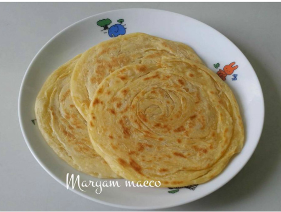
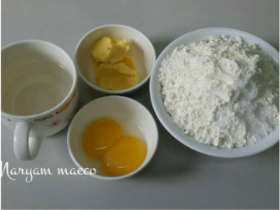
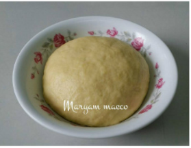
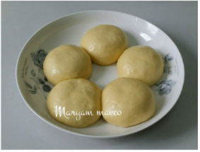
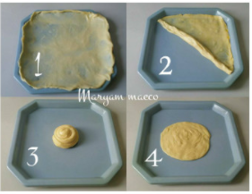
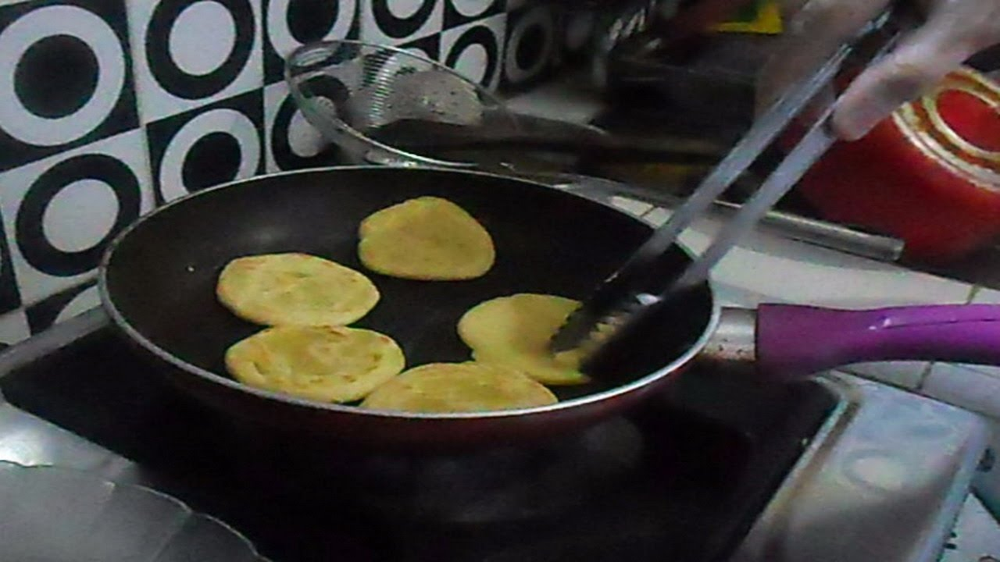

Resep Kue Maryam

Bahan-Bahan
- 500 gr tepung terigu
- 2 sdm susu bubuk / susu kental manis
- 1/2 sdt garam
- 84 ml minyak goreng
- 225 ml air hangat
Langkah Langkah
- Siapkan wadah, lalu masukan tepung terigu, susu, dan garam, uleni sampai kalis

- Uleni menggunakan tangan hingga adonan kalis dan tidak lengket sambil
ditambahkan air sedikit demi sedikit untuk menyesuaikan tekstur adonan.

- Bagi adonan sama rata, bentuk bulat-bulat, olesi margarin diseluruh bagian
sampai rata (boleh pakai margari cair/minyak goreng). Setelah itu tutup dengan plastik
dan lap basah, diamkan selama 1 jam

- Ambil 1 bulatan adonan, kemudian olesi dengan minyak goreng. Pipihkan adonan setipis
mungkin dan selebar mungkin. Seperti saat tukang martabak membuat kulit martabak telur.
Setelah pipih, gulungkan adonan sehingga membentuk gulungan memanjang. Kini adonan berbentuk
seperti karpet yang digulung. Gulungkan lagi adonan dari kedua ujungnya secara berlawanan.
Kalau adonan diletakkan melintang, gulung ujung kanan ke sebelah atas dan kliri ke sebelah
bawah hingga kedua gulungan bertemu di tengah. Tumpuk kedua gulungan sedemikian rupa.

- Panaskan teflon, ambil adonan yang sudah di tumpuk jadi satu[3] kedalam teflon,
langsung pipihkan dengan cara ditekan memutar menggunakan serokan penggorengan
Roti Maryam / kue canai langkah memasak 6 foto
